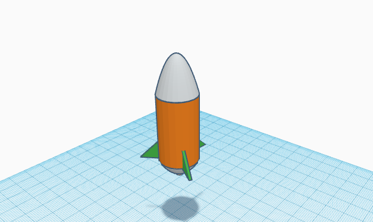

9/2/2022 - Created an account on tinkercad.com and learned how to utilize its tools and shapes. The challenge of the day was to recreate a kitchen home appliance based on a google image in tinkercad with the most detail possible.

9/16/2022 - This week, we started building our Rube Goldberg Machine and on Friday our challenge was to make a paper boat and have it hold the most amount of weight without sinking in 5 minutes.
9/23/2022 - We finished building our Rube Goldberg Machine. Our main problems were the car getting stuck or the cup not pushing the car enough for it to go down the ramp. Our machine was also very unstable. It needed more of a foundation so that it wouldn't easily fall or sway too much to one side. We were able to somewhat fix it by adding lots of tape but it just barely holds up
9/30/2022 - First day of class, we listened to a guest speaker named Steven and he worked at Western Digital. Steven was able to gave us some insight into Computer Engineering and what it's like in that career field. Afterwards, we began "dissecting" a laptop by taking it apart and labeling each part on a worksheet with different colors. On Friday, we skipped the challenge and just continued to disassemble and reassmble the laptop.

10/7/2022 - We listened to a presentation about bioengineering and looked at different types of prosthetics. On tinkercad, we had to design an animal prosthetic. This could be any animal and any type of prosthetic. I decided to design a horse leg prosthetic and designed it with the joints in mind so that the prosthetic could move like a real horse leg. For the challenge, we had to write down the steps to make a PB&J sandwich. These directions are supposed to be taken very literally and had to be very specific.

10/13/2022 - We're starting our next big project which is to make a bottle rocket and have it travel the farthest distance in the end. First we had to make a list of materials we needed and to sketch a design of the rocket. Then, we went on tinkercad to cad our rocket design. For the challenge, we had to make "flying paper" to hit an orange bucket from a distance. My paper airplane sadly just dived straight down shortly after I threw it.
10/21/2022 - This week, we built our bottle rocket. Our rocket has a pointed nose cone with 3 right triangle fins. The fins are wrapped in duct tape so that there aren't any ridges that would affect the drag. At the end of the week, we launched our rockets. Surprisingly, our group's rocket went the farthest that day which was very cool.
10/27/2022 - We learned about environmental engineering and the different types of pollution, hazards, and ways to prevent them. At the end of the week, we made a water filter in a bottle using rocks, sand, pebbles, and cotton. For the challenge, we tried to figure out how many candy corn fit on a 8.5 x 11 paper. Our answer was 198 pieces of candy corn.